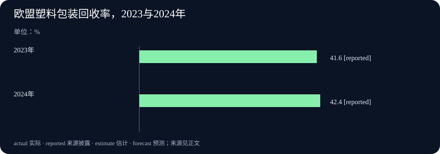

Daily Intelligence｜让AI结论能够被检查，塑料回收率与人均废物量同时上升
2026-10-23｜北京时间｜新闻查阅截止：2026-10-23 06:57:39+08:00，优先观察此前24小时首次公开的材料。美国失业保险周报有窗口内的官方公开时间；其余主线原文标注10月22日，小时未披露，不能确证严格处于24小时窗口。新公告所讲的实验、季度和年度资料，另按实际时期说明。
Today's Thesis｜今天的判断
人工智能（AI）生成的结果，开始有更多可以交给他人检查的具体产物。Anthropic与Theorem披露，模型为一批开源软件测试入口编写数学证明，再由专门程序检查；Ai2公开年度卫星特征和浏览器工具，让使用者能够复用计算结果、追溯原始影像。值得关注的是检查依据怎样交付，而非只听作者评价效果。商业与公共统计也需要这种阅读方式：宝洁销售增长与毛利率下降同时发生，欧盟塑料包装回收率提高与人均废物量增加也同时发生。把结论还原到规则、分母和对应时期，才能判断究竟改善了什么。这是本报对本期材料的分析。
Executive Summary｜先看三条变化
- 模型写证明，检查程序决定是否通过：Anthropic与Theorem报告，为123个开源软件库（供其他程序复用的一组代码）的239个测试入口，在规定运行条件下证明相应不会崩溃的性质，并公开部分证明产物。测试入口是把测试输入送入程序的起点，证明范围由所写规则和运行模型决定。研究原文
- 地表分析多了可复用的数字摘要：Ai2发布OlmoEarth v1.3年度卫星特征与新Explorer。2023至2025年资料覆盖全球陆地和邻近海岸、南极除外；更早年份只覆盖部分国家。它是年度分析材料，不是实时监控。团队公告
- 经营金额和比例出现不同方向：宝洁7至9月净销售同比增长4%，毛利率由51.4%降至49.8%；欧盟2024年塑料包装回收率升至42.4%，人均产生量也增加。美国最新初请减少，较早一周的续领指标增加，须按各自参考周阅读。宝洁财报、Eurostat、美国劳工部周报
AI Daily｜AI与产品
开源软件的部分性质，有了可检查的数学证明
Anthropic于10月22日披露与Theorem合作的研究。研究方让Claude在发现并修补问题后，为123个开源软件库的239个测试入口证明规定条件下不会崩溃的性质。一个软件库可以有多个测试入口，所以239个入口不等于239套完整软件。研究在此前数周进行，22日是成果的新披露日期，原文未提供发布小时。研究原文
这次采用形式化验证：先把希望程序遵守的要求写成精确的数学条件，再提供可以由程序检查的证明。Claude负责帮助写证明，Rocq证明检查器负责核对证明是否符合这些条件。它把“模型说这段程序没问题”，推进到“拿出一份按明确规则可以检查的证明”。团队公开了部分证明和运行规则，供外部查看；公开仓库是研究成果的子集。证明产物
证明的适用范围很具体：输入小于64MB、单线程、静态编译，即把所需代码预先组合好的程序，并使用固定内存预算。研究针对RISC-V这一处理器指令体系及Linux进程行为的数学模型，不能直接覆盖所有电脑与运行方式。规定性质成立，也不表示调用者怎样使用都正确，或整个软件的所有错误已经消失。真正新增的能力，是让模型承担部分证明工作；规范是否表达真实需要、运行模型与检查程序是否可靠，仍需负责使用的人审视。
卫星资料先变成摘要，再让更多人试作地图
Ai2在10月22日宣布OlmoEarth v1.3、预先计算的年度卫星特征与新Explorer。官方数据说明也明确初次数据发布为当天。这里的特征，可以理解为每块地的一份数字摘要：把一年中雷达和多光谱影像提供的信息，压缩成一组可重复利用的数字。多光谱影像记录不同波段的反射信息，有助于区分地表情况。发布文章、数据说明
每个10米像素提供128个数字，也可以取前64个。64或128描述摘要的长度，空间分辨率仍是10米。使用者不必每次从大量原始影像重新计算，可以先寻找特征相似的地区，用少量已标注地点训练小型分类器，再把分类结果导出。分类器是按示例把地点分到不同类别的程序。新Explorer支持免登录在浏览器中试用，也能调出原始影像核对，降低了开始探索资料的准备工作。
这次资料按2017至2025年组织，初次发布中，2023至2025年覆盖全球陆地及邻近海岸水域，不包括南极；2017至2022年只覆盖部分国家，后续继续补齐。它不提供2026年即时地表状态。每个图块和年度还有使用哪些卫星观测的来源表，便于追溯。地图是否分对，仍取决于分类定义、标注与当地实况；特征相似或变化，不能自行说明变化原因。模型和数据也须按OlmoEarth Artifact License及使用指南使用，公开资料并非没有使用条件。
Business Daily｜商业与产业
宝洁于10月22日公布2027财年第一季度结果。财年名称容易造成误会：这份报表对应实际已结束的2026年7至9月，季度截至9月30日，与2025年同期比较；公告只提供日期，未披露小时。官方财报与季度表
净销售由223.86亿美元增至232.76亿美元，公司披露增长4%。排除汇率、收购与业务剥离影响后，公司另算的有机销售也增长4%；这是为了比较原有业务而提供的补充口径。销售驱动分解中，销量增加2.4%，说明本季增长包含售出数量的增加，而非只靠提高价格。各驱动项目会受舍入影响，不宜把近似百分比硬凑成精确公式。
销售提高的同时，毛利率由51.4%降至49.8%，下降1.6个百分点。毛利率是扣除产品成本后留下的毛利占净销售的比例，尚未扣完所有经营费用。营业利润是在收入中扣除相关经营成本后的会计利润。本季金额由58.56亿美元增至59.37亿美元，增幅小于收入；营业利润率则由26.2%降至25.5%。这组结果提示，销售规模扩大与每单位销售留下多少经营利润，需要一起追踪。它描述宝洁已结束季度的经营，不直接代表全部消费品需求，也没有提供证据把变化归因于今天的AI工具。
Macro Observation｜宏观观察
美国劳工部10月22日公布失业保险周报，官方公开安排为当日美国东部夏令时08:30，即北京时间20:30，处于本期观察窗口。经季节调整的初次申请，在截至10月17日当周为19.4万，比前周修订后的20.0万少6000。季节调整，是统计上扣除每年常见季节变化的影响；最新周仍是可能修订的初值。正式周报
另一项续领指标，在截至10月10日当周为172.8万，比前周修订后的170.3万增加2.5万。初次申请观察新进入申请流程的情况，续领观察仍在相关保险计划内领取的人群；它们的最新参考周相差一周。新申请减少与仍在领取的人群增加，值得继续观察，但不能写成同一周全部失业人口怎样变化。两项都只覆盖相应保险制度，并非通常所说的全国失业率。
Eurostat同日发布的包装废弃物资料，则把观察期放在2024年。欧盟全年产生包装废弃物8150万吨，人均181.0公斤，比2023年多3.2公斤。其中塑料包装人均产生35.9公斤，回收15.3公斤，两项都比上一年多0.6公斤。新发布统计
塑料包装回收率由2023年的41.6%升至2024年的42.4%，提高0.8个百分点。回收比例提高，并未伴随人均塑料包装废物减少。人均数值把家庭、企业和政府等全经济总量除以平均人口，并不是逐户称重的个人垃圾量。资料在22日新公布，描述的是2024年，不能当作2026年减废工作的即时成绩；也不能把欧盟整体统计归给某一家企业。该原页未披露发布小时。
Signal Dashboard｜信号仪表盘
| 主线 | 本次新信息 | 应继续检查什么 |
|---|---|---|
| 软件证明研究 | 123个库的239个测试入口，规定条件下的性质通过证明检查 | 条件覆盖哪些运行方式，公开产物是否足以复查 |
| OlmoEarth年度资料 | 新公开年度特征与浏览器探索工具 | 地点与年份覆盖、原影像和地面标注是否适合任务 |
| 宝洁季度经营 | 净销售增长4%，毛利率下降1.6个百分点 | 销量增长能否延续，成本与经营利润如何变化 |
| 美国失业保险 | 10月17日当周初请下降，10月10日当周续领上升 | 后续修订、持续时间，以及各自参考周 |
| 欧盟塑料包装 | 2024年回收率升至42.4%，人均废物量也增加 | 回收比例、废物总量与产生量是否共同改善 |
Deep Insight｜深度观察
让结论能够被检查，要交出规则、输入和比较方法
软件证明研究提出了一个具体变化：生成答案的系统，不必同时拥有判断答案是否合格的最终权力。模型写出证明，再交给按精确规则工作的检查程序，这使审阅从“它看起来合理”转向“它是否满足写下来的条件”。测试通常挑选许多输入观察结果，形式化证明尝试在规定范围内说明性质成立；两者提供的依据不同。后者并没有替人决定什么要求值得证明。如果要求漏掉重要用途，或运行假设与实际环境不同，一份通过的证明仍可能没有回答使用者最关心的问题。因此，公开证明时同时公开要求与假设，才让外部检查有了起点。
这也改变了人该把时间放在哪里。生成证明更容易以后，审阅者可以更多检查规则是否完整、修补是否改变原有功能、哪些依赖仍被直接信任。比如，单线程程序的结论若要用于多线程服务，就需要另外处理多个任务同时访问资料的问题。不能把“已有数学证明”作为停止追问的理由，也不必因此否定成果。更有效的做法，是写清哪一项性质已经有可检查的支持，再列出尚未覆盖的实际使用方式。本期研究公开的是部分产物，外部可检查范围与作者报告的研究全体仍有区别。
卫星特征展示了另一种检查关系。预先计算的数字摘要，让分析者更快开始比较地点和建立分类，但压缩也让原始观测不再直接呈现在结果里。一个区域被分成某种类别，可能与所用季节、影像质量、标注方式和当地差异有关。Ai2提供来源表和原影像查看入口的意义，就在于使用者可以从分类结果退回观测材料。要判断某块地究竟怎样变化，仍需适当的当地资料；若要判断原因，还需额外证据。使用年度摘要做探索，与作出执法或灾害因果判断，所需支持并不相同。
财报和回收数据把同一问题放到了金额与比例上。宝洁销售增加，营业利润金额也增加，但毛利率与营业利润率下降。若只选择销售增长，会漏掉每单位收入留下的空间；若只选择利润率下降，又会漏掉经营规模扩大。欧盟塑料包装回收率提高，同时人均产生量增加，则说明提高回收处理比例与减少废物产生是两件事。评价一项经营或环保措施，需要先说清目标究竟是哪一个，再选择能回答它的读数。欧盟整体资料无法替某家公司证明包装措施有效，两者之间需要公司自身可对应的记录。
失业保险资料进一步提醒，比较方法还包括时间。初请与续领描述进入流程和留在流程的不同阶段，最新数据截止又相差一周。把两个箭头并排放在标题里，很容易让人误以为已经看到同一批人的完整去向。持续比较相同指标、保留修订值，并等参考周逐步对齐，才更接近观察变化怎样延续。今天的新数据提供了可以追踪的问题，尚不足以单独解释劳动市场的全部情况。
由此形成的实用要求很简单：一个结论若要影响实际决定，应能说清依据是什么、怎样从依据走到结论，以及什么新证据会使判断改变。代码可以交出规则与证明，地图可以交出观测来源，经营与统计可以交出对应时期和计算定义。把这些连接保留下来，读者才有机会检查、纠错和更新判断，而不是只能接受一个听起来完整的说法。以上联系是本报的分析，不是五条来源已经证明的共同因果关系。
Tomorrow Watch｜明日值得追踪
- 软件证明公开产物是否增加，以及其他使用者能否在说明的运行条件下检查和复用。
- OlmoEarth更早年份资料如何补齐，不同地点的分类能否用当地标注与原始影像验证。
- 宝洁销量与成本怎样影响后续季度，销售增长能否留下更多经营利润。
- 美国初请与续领后续修订和相同参考周的变化，避免把一周读数当成长期走向。
- 欧盟之后相同口径资料中，能否出现塑料包装产生量下降、回收率提高的组合。
One Chart｜一张图
下图比较欧盟塑料包装回收率：2023年为41.6%，2024年为42.4%，提高0.8个百分点。单位为%，两项是同一官方发布中的相同指标。图表原始来源
图中的 reported 表示来源披露的数字。这是2024年统计在2026年10月新公布，不能读成2026年已经达到的回收进度。回收率描述被回收部分占相应塑料包装废物的比例，不是全部包装的回收率；原文人均公斤数经过舍入，也不宜用它们另算一个比率替代官方值。结合人均产生量增加，图表显示的是回收比例改善，尚未说明废物产生减少。

Quote of the Day｜今日引用
“A wise man, therefore, proportions his belief to the evidence.”
— David Hume（大卫·休谟），《人类理解研究》第十节《论奇迹》第一部分，第4段；作品初版1748年。原著正文
中文：因此，明智的人会依据证据的分量来调整自己的信念。
休谟在这里讨论经验、证据冲突与相信的程度，随后用于分析他人的证言。本句采用原著现代拼写编校文本，中文为本报译文。它不是对现代AI或投资的评论；联系今天的材料，让相信的程度随支持力度调整，是本报的编辑感想。
Action Items｜今天值得思考什么
- 证明究竟覆盖什么？ 遇到“AI验证代码”的说法，先找被证明的要求、输入范围和运行假设，再判断是否适合自己的系统。
- 地图结论能回到原始材料吗？ 试用年度卫星特征时，记录地点、年份与分类定义，抽样对照原影像和当地标注。
- 销售增长留下多少利润？ 把销售额、销量、毛利率和营业利润放在同一季度比较，继续追问成本及业务结构的变化。
- 比例提高，产生量也减少了吗？ 阅读回收表现时同时记录废物量、回收量和官方回收率，不用一个上升箭头替代所有目标。
- 什么会改变当前判断？ 对就业或经营结论，写下要等的同口径数据与修订，避免在不同参考周或不同总体之间直接作因果解释。
信息边界
本期固定研究截止为2026-10-23T06:57:39+08:00，优先观察窗口自2026-10-22T06:57:39+08:00开始。Anthropic、Ai2、宝洁与Eurostat原文均标注10月22日，小时未披露，不能确证严格24小时。美国劳工部周报的官方公开安排为10月22日08:30美国东部夏令时，即北京时间20:30，确认在窗口内。
软件研究的实验发生于此前数周；卫星资料对应2017至2025年且各年覆盖不同；宝洁财报对应2026年7至9月；失业保险初请与续领分别截至10月17日及10月10日当周；包装统计对应2024年。厂商研究与功能按原文披露，本报未独立重跑全部证明或地图评估。正文已把来源事实与分析、行动建议分开，不把不同新闻拼成已证实的共同原因。